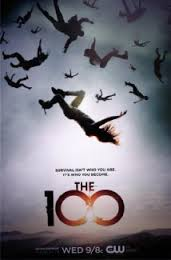

«100», або «Сотня» (англ. The 100) — американський телесеріал, розроблений Джейсоном Ротенбергом та заснований на однойменній книзі Кесс Морган[1]. Прем'єра шоу відбулася в середу, 19 березня 2014[2].
Показ четвертого сезону розпочався 1 лютого 2017 року. У березні 2017 року телеканал The CW анонсував прем'єру п'ятого сезону на лютий 2018 року.
Сюжет
Пройшло 97 років після руйнівної ядерної війни, яка знищила майже все життя на Землі. Відомо лише, що залишилися в живих жителі дванадцяти космічних станцій на орбіті Землі. Космічні станції об'єдналися, щоб сформувати одну масивну станцію під назвою Ковчег, де проживає близько 2400 осіб, які живуть під керівництвом канцлера Яха. Ресурси мізерні і всі злочини, незалежно від їх характеру або тяжкості, караються смертю, винятком є неповноліття. Всі системи життєзабезпечення Ковчега перебувають у критичному стані. 100 неповнолітніх ув'язнених були відправлені на поверхню щоб визначити, чи є Земля придатною для життя. Коли підлітки опиняються на прекрасній планеті, яку вони бачили тільки з космосу,розуміють, що вона придатна для життя. Їхня задача знайти притулок в старому військовому об'єкті - горі Везер. Тим не менш, вони приземляються на пристойній відстані від нього і незабаром стикаються з іншими проблемами. Вони борються з небезпеками цього суворого, нового світу та намагаються сформувати поселення. Тим не менш, вони виявляють, що не все людство було знищено; деякі люди на Землі, які називають себе землянами, пережили війну, і також борются з більшими небезпеками, а саме - Жнецями (землянами, які були перетворені в канібалів) і горянами (людьми, які проживають в горі Везер).
У другому сезоні, жителі гори Везер допомагають декільком членам сотні, що залишилися в живих після битви в кінці першого сезону. Гора Везер заповнена людьми, які технологічно розвиненіші, але не в змозі залишити свій бункер через те, що вплив найменшої дози радіації вбиває їх на відміну від людей з Ковчега (які були під дією сонячної радіації, живучи в космосі) і землян (які піддавалися впливу радіації від ядерного апокаліпсису протягом минулого сторіччя). Хоча зовні вони здаються дуже доброзичливими і привітними в них є свої темні таємниці. Не маючи достатньої кількості потужності космічного корабля, щоб повернутися на Землю, люди з орбіти "спускаються" на космічних станціях Ковчегу, більшість яких зазнає катастрофи. Ті, що вціліли, намагаються освоїтись на Землі, шукаючи 100 неповнолітніх, посланих раніше і борються з погрозами від землян.
Нагороди
- Премія Еммі Відмінні спеціальні і візуальні ефекти